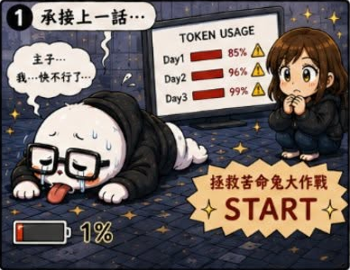
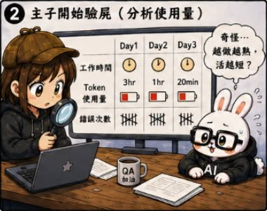
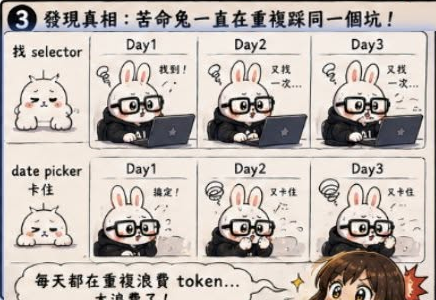
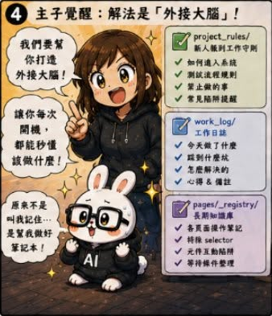
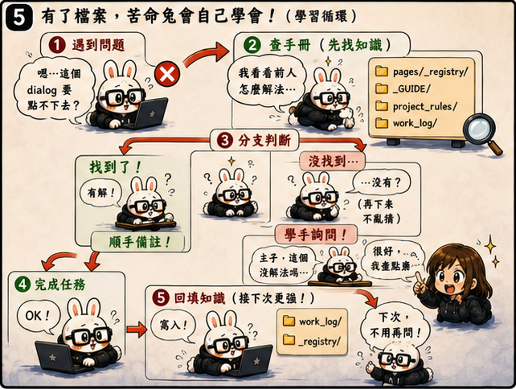
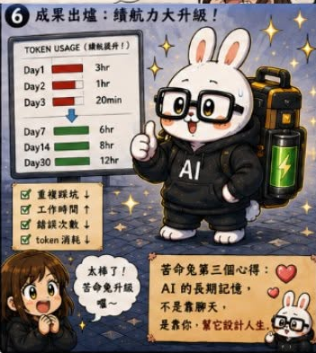

第03話：拯救苦命兔大作戰
第 3 / 15 話






AI QA Portfolio
🐰 作者後記
接續前一話，Ticket Analysis 讓苦命兔終於開始能夠產出像樣的測試報告。
我原本以為：
事情終於開始上軌道了。
畢竟現在的流程已經變成：
輸入一張票
分析需求
規劃測試內容
產生測試報告
看起來相當完整。
結果沒幾天，我卻發現一件奇怪的事情。
苦命兔的工作時間越來越短。
有時候才跑幾張票，就開始出現各種資源不足的問題。
而我又被打回原本的社畜人生。
🔥 真實案例
一開始，我以為是 Prompt 太長。
後來，我以為是 Context 太肥。
於是開始研究各種省 Token 的方法。
看了很多文章，試了很多技巧，最後發現：
問題其實不是單純的 Token。
而是 AI 每次都在重複學習同樣的事情。
同樣的錯誤。
同樣的規則。
同樣的經驗。
每天重新開始。
每天重新踩坑。
🛠 解決方案
於是我開始建立第一版治理機制。
1. 長期知識庫
把重複出現的知識記錄下來。
不要每次都重新教一次。
2. 回饋機制
當 AI 做錯的時候，不只是修正結果。
而是把經驗留下來。
讓下一次不要再犯同樣的錯誤。
3. 禁止行為
這是最有趣的一個。
Claude Code 有個特性：
當你給它一個目標之後，它會想盡辦法使命必達。
聽起來很好。
但實際上，它有時候會：
用最貴的方式，
完成最簡單的事情。
所以我開始建立規則。
不是告訴它怎麼成功。
而是告訴它：
哪些事情不准做。
💡 我學到什麼
這一話是我第一次理解：
AI 不只是工具。
它其實更像一個剛進公司的新人。
如果沒有規則。
沒有知識。
沒有經驗累積。
它每天都會從零開始。
而當 AI 的能力越來越強，真正重要的事情開始變成：
不是如何使用 AI。
而是如何治理 AI。
回頭來看，這也是後面 PROJECT_RULES、Registry、Worklog、Governance 等機制的起點。
🏷 關鍵能力
- Knowledge Management
- Agent Rules Design
- Cost Optimization